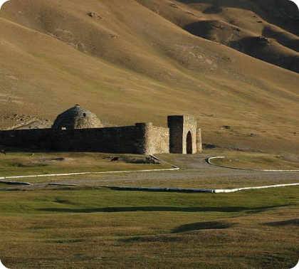
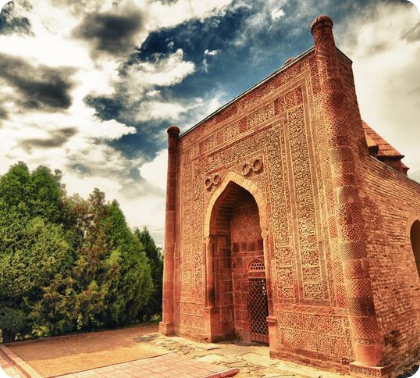

Исторические памятники Кыргызстана — это живая нить, соединяющая
прошлое с настоящим, отражающая величие духа и культуру народа,
веками населяющего этот горный край. Каждая башня, мавзолей или
священная гора хранит в себе воспоминания о великих событиях,
легендах и людях, которые оставили свой след в истории. Башня Бурана
возвышается как символ средневекового искусства и мощи древних
цивилизаций, Сулайман-Тоо рассказывает о святости земли, где
переплелись религии и традиции, а Таш-Рабат, стоящий на шелковом
пути, до сих пор вдохновляет путников своим спокойствием и величием.
Эти памятники не просто каменные строения — они свидетели времени,
несущие послание о стойкости, мудрости и красоте народа Кыргызстана.
прошлое с настоящим, отражающая величие духа и культуру народа,
веками населяющего этот горный край. Каждая башня, мавзолей или
священная гора хранит в себе воспоминания о великих событиях,
легендах и людях, которые оставили свой след в истории. Башня Бурана
возвышается как символ средневекового искусства и мощи древних
цивилизаций, Сулайман-Тоо рассказывает о святости земли, где
переплелись религии и традиции, а Таш-Рабат, стоящий на шелковом
пути, до сих пор вдохновляет путников своим спокойствием и величием.
Эти памятники не просто каменные строения — они свидетели времени,
несущие послание о стойкости, мудрости и красоте народа Кыргызстана.

Башня Бурана

Сулайман - Тоо

Таш - Рабат

Манас ордо

Узген

Шах Фазиль